Este documento reúne, em um único arquivo, os cinco itens pedidos na entrega. Cada item corresponde
a uma parte do documento:
Parte 1 — Tutorial completo
1. Apresentação do projeto
2. Organização dos arquivos
3. Passo a passo do desenvolvimento
4. Estrutura do HTML e tags semânticas
Parte 2 — Trechos do código HTML e CSS comentados
5. HTML comentado
6. CSS comentado
Parte 3 — Capturas de tela do projeto
7. A página em telas grandes
8. Navegação por teclado (foco visível)
9. A página no celular
Parte 4 — Explicação das práticas de acessibilidade implementadas
10. Quadro-resumo das práticas
11. Explicação de cada prática
12. Testes de acessibilidade realizados
Parte 5 — Conclusão
13. Dificuldades encontradas
14. Aprendizados e considerações finais
15. Repositório no GitHub
Parte 1Tutorial completoO que foi construído, como os arquivos foram organizados e a sequência de passos seguida do zero até a publicação.
1. Apresentação do projeto
O tema escolhido foi um projeto social: o Conecta Bairro, uma
organização fictícia que oferece oficinas gratuitas de informática para jovens em busca do
primeiro emprego e para pessoas idosas que querem usar a internet com autonomia.
A escolha não foi por acaso. Um site sobre inclusão digital que fosse inacessível seria uma
contradição: parte do público real de um projeto assim é justamente formada por pessoas idosas,
com baixa visão, com pouca familiaridade com o mouse ou que dependem de leitor de tela. Isso deu
um critério prático para cada decisão tomada ao longo do desenvolvimento: uma pessoa que
enxerga pouco, ou que navega só com o teclado, conseguiria se inscrever em uma oficina sozinha?
A página entregue atende a todos os requisitos de estrutura da atividade:
Requisito
Como foi atendido
Cabeçalho
<header> com logotipo, título <h1> e slogan
Menu de navegação
<nav aria-label="Menu principal"> com quatro links internos
Conteúdo principal
<main id="conteudo">
Pelo menos três seções
Quatro <section>: sobre, oficinas, depoimentos e inscrição
Imagem com texto alternativo
<figure> + <img alt="..."> + <figcaption>
Lista de informações
8 listas (<ul> / <li>), com 25 itens
Formulário acessível
4 <fieldset> com <legend> e 11 campos com <label> associado
Links e botões
Links com texto descritivo e dois <button> nativos
Rodapé
<footer> com contato, horários e links úteis
2. Organização dos arquivos
Os arquivos foram separados por tipo. Essa divisão mantém o HTML responsável apenas pela
estrutura e pelo significado do conteúdo, e deixa a apresentação
visual inteiramente no CSS — que é exatamente o princípio por trás do HTML semântico.
pagina-inclusiva/
│
├── index.html <!-- página principal (estrutura e conteúdo) -->
│
├── css/
│ └── estilo.css /* toda a apresentação visual */
│
├── img/
│ ├── logo.svg <!-- logotipo do projeto -->
│ ├── favicon.svg <!-- ícone da aba do navegador -->
│ └── oficina.svg <!-- ilustração da turma da oficina -->
│
├── docs/
│ ├── tutorial.html <!-- fonte deste documento -->
│ ├── tutorial-acessibilidade.pdf <!-- este documento -->
│ └── captura-*.png <!-- capturas de tela da Parte 3 -->
│
└── README.md <!-- descrição do repositório -->
As imagens estão em formato SVG. Como o SVG é vetorial, ele não perde nitidez
quando a pessoa aumenta o zoom do navegador para 200% ou 400% — recurso muito usado por quem tem
baixa visão (critério WCAG 1.4.4 – Redimensionar texto).
3. Passo a passo do desenvolvimento
A página foi construída na ordem abaixo. A regra geral foi primeiro o significado, depois a
aparência: o HTML ficou completo e utilizável sem nenhum CSS antes de qualquer estilo ser
escrito.
Criar a estrutura de pastas. Pastas css/, img/ e
docs/, e o arquivo index.html na raiz.
Escrever o esqueleto do documento.<!DOCTYPE html>,
<html lang="pt-BR">, <meta charset>, viewport,
um <title> específico e o link para css/estilo.css.
Definir as regiões da página.<header>, <nav>,
<main> e <footer>, com o link “Pular para o conteúdo principal”
como primeiro elemento do <body>.
Montar a hierarquia de títulos. Um único <h1>, um
<h2> por seção e <h3> para os subtítulos, sem pular níveis.
Preencher as quatro seções. Texto, listas de informação, a figura com
alt e legenda, os cartões das oficinas em <article>, os depoimentos em
<blockquote> e a chamada de voluntariado em <aside>.
Construir o formulário. Cada campo com <label for>, dicas
ligadas por aria-describedby, grupos em <fieldset>/<legend>
e botões <button> com texto descritivo.
Escrever o CSS. Paleta em variáveis com contraste medido, base legível (18 px,
entrelinha 1,6), layout com Grid, link de salto, anel de foco e responsividade.
Testar. Navegação só por teclado, medição de contraste, inspeção da estrutura e
zoom/tela pequena. Os problemas encontrados foram corrigidos e os testes repetidos (Parte 4).
Registrar e publicar. Capturas de tela, este documento e publicação do projeto
no GitHub.
4. Estrutura do HTML e tags semânticas
4.1 As regiões (landmarks) da página
O corpo da página foi dividido em regiões nomeadas. Leitores de tela oferecem um atalho para
“saltar entre regiões”, e é por isso que o uso de <div> genéricas foi evitado
no nível mais alto da estrutura: uma <div> não gera região alguma.
<body>
<a class="link-salto" href="#conteudo">Pular para o conteúdo principal</a>
<header> ...logotipo, h1 e <nav> com o menu... </header>
<main id="conteudo">
<section id="sobre"> ...</section>
<section id="oficinas"> ...</section>
<section id="depoimentos"> ...</section>
<section id="inscricao"> ...</section>
</main>
<footer> ...contato, horários e links úteis... </footer>
</body>
4.2 Hierarquia dos títulos
Os títulos foram usados como um índice do documento, sem pular níveis. Um leitor de tela consegue
listar todos os títulos da página e navegar direto para um deles — mas isso só funciona se a
hierarquia estiver correta.
Nível
Texto do título
Função
h1
Conecta Bairro
Título único da página
h2
Sobre o projeto
Seção 1
h3
Nossos números em 2025
Subtítulo da seção 1
h2
Oficinas oferecidas
Seção 2
h3
Informática básica / Internet segura / Currículo e trabalho digital
Título de cada article
h2
Depoimentos dos alunos
Seção 3
h3
Quer ser voluntário?
Título do aside
h2
Formulário de inscrição
Seção 4
h2
Contato / Horário de atendimento / Links úteis
Blocos do rodapé
Cuidado importante: os títulos foram escolhidos pelo nível hierárquico,
nunca pelo tamanho da letra. Se um título precisasse ficar menor, o ajuste seria feito no CSS
(font-size) e não trocando <h2> por <h4>.
4.3 Tags semânticas utilizadas
“HTML semântico” significa escolher a tag pelo significado do conteúdo, e não pelo
efeito visual que ela produz. Visualmente, quase tudo nesta página poderia ter sido feito com
<div> e <span>: o resultado na tela seria idêntico. A diferença
aparece para quem não vê a tela — a tag semântica é a única informação que o leitor de tela tem
sobre o papel de cada bloco.
Tag
Para que serve
O que ela entrega à tecnologia assistiva
<header>
Cabeçalho da página
Região “banner”, alcançável por atalho
<nav>
Bloco de navegação
Região “navegação”; permite pular o menu inteiro
<main>
Conteúdo principal
Região “principal”, única na página; destino do link de salto
<section>
Bloco temático com título
Região nomeada pelo título associado
<article>
Conteúdo independente
Indica que o bloco faz sentido isolado do resto
<aside>
Conteúdo complementar
Região “complementar”; sinaliza que não é o assunto principal
<figure> / <figcaption>
Imagem com legenda
Liga a legenda visível à imagem de forma programática
<blockquote>
Citação de terceiros
Indica a mudança de autoria do texto
<form>
Formulário
Região “formulário”
<fieldset> / <legend>
Grupo de campos
O grupo é anunciado junto de cada campo dentro dele
<label>
Rótulo de campo
Dá nome ao campo e aumenta a área de clique
<button>
Ação
Focável e acionável por Enter e Espaço, sem JavaScript
<footer>
Rodapé
Região “rodapé”
Parte 2Trechos do código HTML e CSS comentadosOs trechos mais importantes de index.html e css/estilo.css. Os comentários em verde explicam, linha a linha, a função de cada tag, atributo e regra.
5. HTML comentado
5.1 Cabeçalho do documento
<!-- Declara que o documento é HTML5 -->
<!DOCTYPE html>
<!-- lang="pt-BR": o leitor de tela usa o idioma para escolher a voz e a pronúncia -->
<html lang="pt-BR">
<head>
<!-- Codificação que exibe corretamente acentos e cedilha -->
<meta charset="UTF-8">
<!-- Faz a página se adaptar à largura do celular, sem zoom forçado -->
<meta name="viewport" content="width=device-width, initial-scale=1.0">
<!-- Título específico: é o primeiro texto anunciado ao abrir a página -->
<title>Conecta Bairro | Projeto de Inclusão Digital</title>
<!-- Ícone da aba e folha de estilos externa (estrutura separada da aparência) -->
<link rel="icon" href="img/favicon.svg" type="image/svg+xml">
<link rel="stylesheet" href="css/estilo.css">
</head>
5.2 Link de salto, cabeçalho e menu
<body>
<!-- Link de salto: primeiro elemento focável da página. Permite que quem
navega por teclado pule o cabeçalho e vá direto ao <main id="conteudo"> -->
<a class="link-salto" href="#conteudo">Pular para o conteúdo principal</a>
<!-- header: região "banner" da página -->
<header class="cabecalho">
<div class="cabecalho__marca">
<!-- O logotipo informa algo, então recebe alt descritivo -->
<img src="img/logo.svg" alt="Logotipo do Conecta Bairro: duas pessoas lado a lado
sob um sinal de conexão sem fio." width="56" height="56">
<div>
<!-- Único h1 da página -->
<h1>Conecta Bairro</h1>
<p class="cabecalho__slogan">Inclusão digital gratuita para a nossa comunidade</p>
</div>
</div>
<!-- nav + aria-label: região de navegação com nome próprio -->
<nav class="menu" aria-label="Menu principal">
<!-- ul: o leitor anuncia "lista com 4 itens" antes dos links -->
<ul>
<li><a href="#sobre">Sobre o projeto</a></li>
<li><a href="#oficinas">Oficinas oferecidas</a></li>
<li><a href="#depoimentos">Depoimentos dos alunos</a></li>
<li><a href="#inscricao">Formulário de inscrição</a></li>
</ul>
</nav>
</header>
5.3 Seção, lista de informações e imagem com legenda
<!-- main: conteúdo principal, destino do link de salto -->
<main id="conteudo" class="conteudo">
<!-- aria-labelledby aponta para o id do h2: a seção vira a
região "Sobre o projeto", usando o próprio título visível como nome -->
<section id="sobre" aria-labelledby="titulo-sobre">
<h2 id="titulo-sobre">Sobre o projeto</h2>
<h3>Nossos números em 2025</h3>
<!-- Lista de informações: dados do mesmo conjunto ficam agrupados -->
<ul class="lista-numeros">
<li><strong>480</strong> pessoas formadas nas oficinas</li>
<li><strong>32</strong> voluntários ativos no projeto</li>
<li><strong>6</strong> turmas simultâneas por semestre</li>
<li><strong>100%</strong> das vagas gratuitas</li>
</ul>
<!-- Texto do link diz o destino: faz sentido mesmo lido fora do contexto -->
<a class="link-texto" href="#inscricao">Ver o formulário de inscrição nas oficinas</a>
<!-- figure + figcaption: a legenda fica ligada à imagem no código.
O alt DESCREVE a cena; a legenda CONTEXTUALIZA (onde foi a aula). -->
<figure class="figura">
<img src="img/oficina.svg"
alt="Ilustração de uma turma da oficina: uma instrutora em pé aponta para um
quadro com o desenho de uma janela de navegador, enquanto quatro alunos
de idades diferentes usam computadores.">
<figcaption>
Turma da oficina “Internet Segura”, realizada no salão comunitário da Vila Esperança.
</figcaption>
</figure>
</section>
5.4 Oficinas em <article>
<section id="oficinas" aria-labelledby="titulo-oficinas">
<h2 id="titulo-oficinas">Oficinas oferecidas</h2>
<div class="cartoes"> <!-- div apenas para o layout em grade (sem significado) --><!-- article: cada oficina é um conteúdo independente, que faria
sentido lido isoladamente (ex.: em um resultado de busca) -->
<article class="cartao">
<h3>Internet segura</h3>
<p>Como reconhecer golpes, criar senhas fortes, usar aplicativos de banco...</p>
<!-- Detalhes em lista, e não em linhas separadas por <br> -->
<ul>
<li>Carga horária: 12 horas</li>
<li>Turmas: sábados, das 9h às 12h</li>
<li>Vagas por turma: 20</li>
</ul>
</article>
<!-- ...mais dois article: Informática básica e Currículo e trabalho digital -->
</div>
</section>
5.5 Depoimentos em <blockquote> e bloco complementar em <aside>
<!-- blockquote: a fala é de outra pessoa, e não do site -->
<blockquote class="depoimento">
<p>“Eu tinha medo de usar o aplicativo do banco. Hoje pago minhas contas sozinha...”</p>
<!-- footer dentro da citação: identifica a autora -->
<footer>— Dona Marlene, 71 anos, turma de Internet Segura</footer>
</blockquote>
<!-- aside: conteúdo relacionado, mas não essencial ao fluxo principal -->
<aside class="aviso" aria-labelledby="titulo-voluntario">
<h3 id="titulo-voluntario">Quer ser voluntário?</h3>
<p>Precisamos de instrutores, monitores e pessoas para apoio administrativo...</p>
<!-- Nada de "clique aqui": o texto informa a ação e o destinatário -->
<a class="link-texto" href="mailto:voluntarios@conectabairro.org.br">
Enviar e-mail para a equipe de voluntariado do Conecta Bairro
</a>
</aside>
5.6 Formulário acessível
<!-- Instrução geral: explica o asterisco em texto, sem depender da cor -->
<p id="ajuda-formulario">
Preencha os dados abaixo para reservar sua vaga. Os campos marcados com
asterisco (<span class="obrigatorio">*</span>) são obrigatórios.
</p>
<!-- aria-describedby: a instrução é lida ao entrar no formulário -->
<form class="formulario" action="#inscricao" method="post"
aria-describedby="ajuda-formulario">
<!-- fieldset + legend: agrupa campos do mesmo assunto; a legend é
repetida pelo leitor de tela a cada campo do grupo -->
<fieldset>
<legend>Dados pessoais</legend>
<div class="campo">
<!-- for="email" deve ser IDÊNTICO ao id="email" do campo -->
<label for="email">E-mail <span class="obrigatorio">*</span></label>
<!-- type="email": teclado com @ no celular
autocomplete: o navegador pode preencher sozinho
required: o leitor de tela anuncia "obrigatório"
aria-describedby: liga a dica abaixo ao campo -->
<input type="email" id="email" name="email" autocomplete="email" required
aria-describedby="dica-email">
<p class="dica" id="dica-email">Usaremos apenas para confirmar sua matrícula.
Exemplo: maria@email.com</p>
</div>
<!-- ...campos Nome completo e Telefone seguem o mesmo padrão -->
</fieldset>
Continuação do formulário: grupo de opções e botões
<fieldset>
<legend>Escolha da oficina</legend>
<!-- ...select "Oficina desejada"... --><!-- Grupo de radios: a legend é a "pergunta" do grupo.
Leitura: "Turno de preferência: Manhã, botão de opção marcado, 1 de 3" -->
<fieldset class="grupo-opcoes">
<legend>Turno de preferência</legend>
<div class="opcao">
<input type="radio" id="turno-manha" name="turno" value="manha" checked>
<label for="turno-manha">Manhã</label>
</div>
<!-- ...Tarde e Noite... -->
</fieldset>
</fieldset>
<!-- button nativo: recebe foco e responde a Enter/Espaço sem JavaScript.
O texto descreve a ação completa, e não só "Enviar" -->
<div class="acoes">
<button type="submit" class="botao botao--primario">Enviar inscrição na oficina</button>
<button type="reset" class="botao botao--secundario">Limpar todos os campos do formulário</button>
</div>
</form>
5.7 Rodapé
<!-- footer: região "rodapé" -->
<footer class="rodape">
<div class="rodape__colunas">
<section aria-labelledby="titulo-contato">
<h2 id="titulo-contato">Contato</h2>
<ul class="lista-simples">
<!-- tel: e mailto: abrem o discador e o e-mail diretamente -->
<li>Telefone: <a href="tel:+551140028922">(11) 4002-8922</a></li>
<li>E-mail: <a href="mailto:contato@conectabairro.org.br">contato@conectabairro.org.br</a></li>
</ul>
</section>
<!-- ...Horário de atendimento... -->
<section aria-labelledby="titulo-links">
<h2 id="titulo-links">Links úteis</h2>
<ul class="lista-simples">
<!-- hreflang="en" e o aviso "(em inglês)": o destino está em outro idioma -->
<li><a href="https://www.w3.org/WAI/WCAG22/quickref/" hreflang="en" rel="external">
Consultar as recomendações WCAG 2.2 no site do W3C (em inglês)</a></li>
</ul>
</section>
</div>
</footer>
6. CSS comentado
O arquivo css/estilo.css foi organizado em oito blocos, do mais geral ao mais específico:
variáveis de cor, reset e base, acessibilidade, cabeçalho e menu, conteúdo, formulário, rodapé e
responsividade.
6.1 Paleta de cores em variáveis
/* Cada cor foi conferida na relação de contraste exigida pela WCAG 2.2
(mínimo 4.5:1 para texto normal e 3:1 para bordas e componentes).
O valor medido fica anotado ao lado da cor. */
:root {
--tinta: #14181f; /* texto sobre branco -> 17.8:1 */
--tinta-suave: #454d59; /* textos de apoio -> 8.5:1 */
--marca: #0b4f6c; /* azul do projeto -> 8.9:1 */
--marca-escura: #072f41; /* fundos escuros -> 14.1:1 com branco */
--marca-clara: #e6f0f4; /* fundo de destaque */
--destaque: #9c3412; /* foco e obrigatório -> 7.2:1 */
--fundo: #ffffff;
--foco-claro: #ffd166; /* anel de foco sobre fundo escuro */
}
6.2 Base legível e links
body {
margin: 0;
/* Fonte sem serifa e corpo de 18px (o padrão é 16px):
melhora a leitura para pessoas com baixa visão e dislexia. */
font-family: "Segoe UI", Tahoma, Geneva, Verdana, Arial, sans-serif;
font-size: 18px;
line-height: 1.6; /* entrelinha generosa */
color: var(--tinta);
background-color: var(--fundo);
}
/* Sublinhado sempre presente nos links: a cor sozinha não pode ser
o único meio de identificar um link (WCAG 1.4.1 - Uso de cor). */
a {
color: var(--marca);
text-decoration: underline;
text-underline-offset: 3px; /* afasta o traço das letras com "perna" (g, p, q) */
}
6.3 Link de salto
/* Fica fora da tela até receber foco pelo teclado.
Não usa display:none, que o tiraria da ordem de tabulação. */
.link-salto {
position: absolute;
left: -9999px;
top: 0;
z-index: 100; /* aparece por cima do cabeçalho */
background-color: var(--destaque);
color: #ffffff;
padding: 0.75rem 1.25rem;
font-weight: 700;
}
.link-salto:focus {
left: 0; /* aparece no canto superior esquerdo *//* O anel padrão é laranja e sumiria sobre o próprio fundo laranja
do link; por isso aqui ele é branco. */
outline: 3px solid #ffffff;
outline-offset: 2px;
}
6.4 Destaque visual do elemento em foco
/* Regra global: qualquer elemento focável recebe um anel espesso,
de alto contraste e afastado para não encostar no texto. */
:focus {
outline: 3px solid var(--destaque);
outline-offset: 3px;
}
/* :focus-visible mostra o anel para quem usa teclado sem poluir a tela
de quem usa mouse; o :focus acima garante navegadores antigos. */
:focus-visible {
outline: 3px solid var(--destaque);
outline-offset: 3px;
border-radius: 3px;
}
/* Sobre fundos escuros o anel laranja perderia contraste:
no cabeçalho e no rodapé ele passa a ser amarelo claro (9.8:1). */
.cabecalho :focus,
.cabecalho :focus-visible,
.rodape :focus,
.rodape :focus-visible {
outline-color: var(--foco-claro);
}
6.5 Formulário
/* Rótulo em bloco, acima do campo: evita texto cortado com zoom
de 200% e facilita a leitura em telas pequenas. */
label {
display: block;
font-weight: 600;
margin-bottom: 0.35rem;
}
input[type="text"], input[type="email"], input[type="tel"], select, textarea {
width: 100%;
font-family: inherit; /* campos usam a mesma fonte legível da página */
font-size: 1rem;
padding: 0.65rem 0.75rem;
border: 2px solid #6b7681; /* borda com 4.6:1 sobre o branco (mínimo 3:1) */
border-radius: var(--raio);
}
/* Texto de ajuda ligado ao campo por aria-describedby. */
.dica {
font-size: 0.9rem;
color: var(--tinta-suave); /* 8.5:1 */
}
/* O asterisco tem cor E uma frase explicativa no início do formulário,
para não depender apenas da cor. */
.obrigatorio {
color: var(--destaque);
font-weight: 700;
}
/* Radio e checkbox maiores, com a cor do projeto. */
.opcao input {
width: 1.25rem;
height: 1.25rem;
accent-color: var(--marca);
}
.botao {
font-size: 1rem;
font-weight: 700;
padding: 0.8rem 1.4rem;
min-height: 48px; /* alvo de toque confortável (WCAG 2.5.8) */
cursor: pointer;
}
.botao--primario {
background-color: var(--marca);
color: #ffffff; /* 8.9:1 */
border: 2px solid var(--marca);
}
6.6 Layout, responsividade e preferências do usuário
/* Grid monta as colunas SEM mudar a ordem do HTML: o leitor de tela
e a tecla Tab seguem a ordem do código, que continua lógica. */
.cartoes {
display: grid;
grid-template-columns: repeat(3, 1fr);
gap: 1.5rem;
}
/* Até 860px de largura (tablet, celular ou zoom alto): uma coluna só,
sem rolagem horizontal (WCAG 1.4.10 - Refluxo). */
@media (max-width: 860px) {
.sobre__grade,
.cartoes,
.rodape__colunas {
grid-template-columns: 1fr;
}
}
/* Celular: botões ocupam toda a largura, alvo ainda maior. */
@media (max-width: 480px) {
body { font-size: 17px; }
.acoes .botao { width: 100%; }
}
/* Respeita quem pediu menos animação no sistema operacional. */
@media (prefers-reduced-motion: reduce) {
* {
animation: none !important;
transition: none !important;
}
}
/* Modo de alto contraste do Windows: o sistema troca as cores do site,
e a palavra-chave Highlight mantém o anel de foco visível. */
@media (forced-colors: active) {
:focus,
:focus-visible {
outline: 3px solid Highlight;
}
}
Parte 3Capturas de tela do projetoA página aberta no navegador: visão geral, cada seção, os estados de foco durante a navegação por teclado e a versão para celular.
7. A página em telas grandes
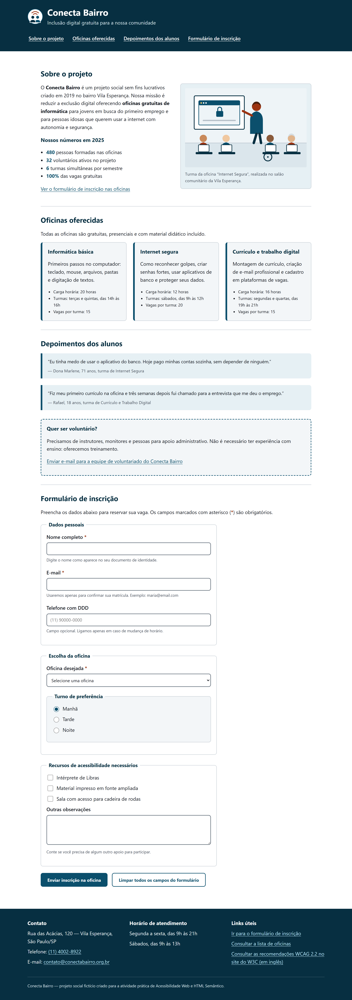
Figura 1 — Visão geral da página completa, do cabeçalho ao rodapé.
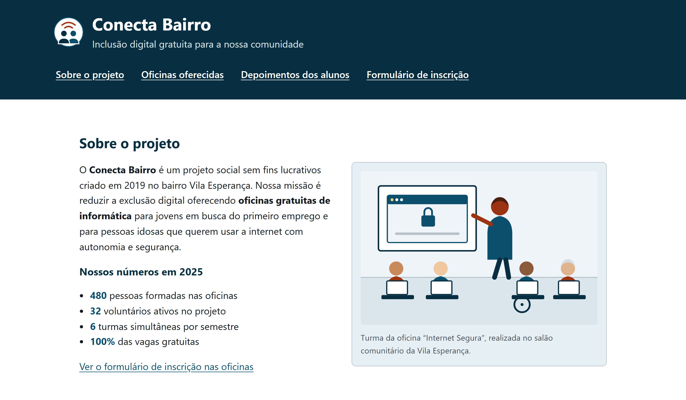
Figura 2 — Cabeçalho, menu de navegação e a seção “Sobre o projeto”.
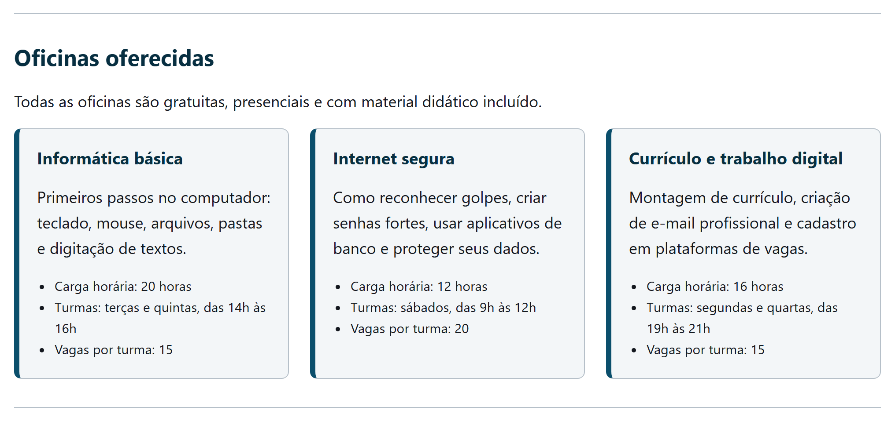
Figura 3 — Seção “Oficinas oferecidas”: cada cartão é um <article>.
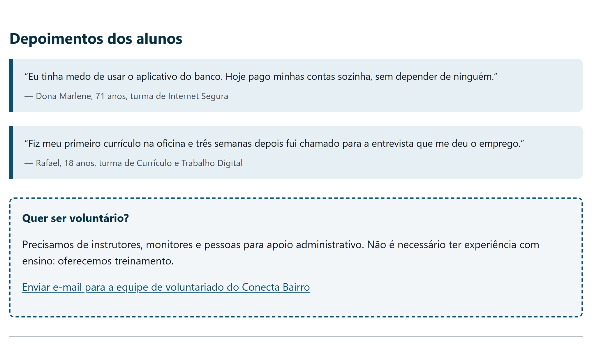
Figura 4 — Depoimentos em <blockquote> e o bloco complementar em <aside>.
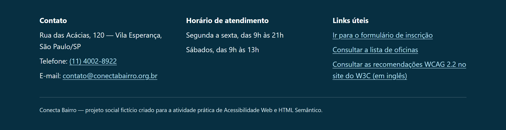
Figura 5 — Rodapé com contato, horários e links úteis.
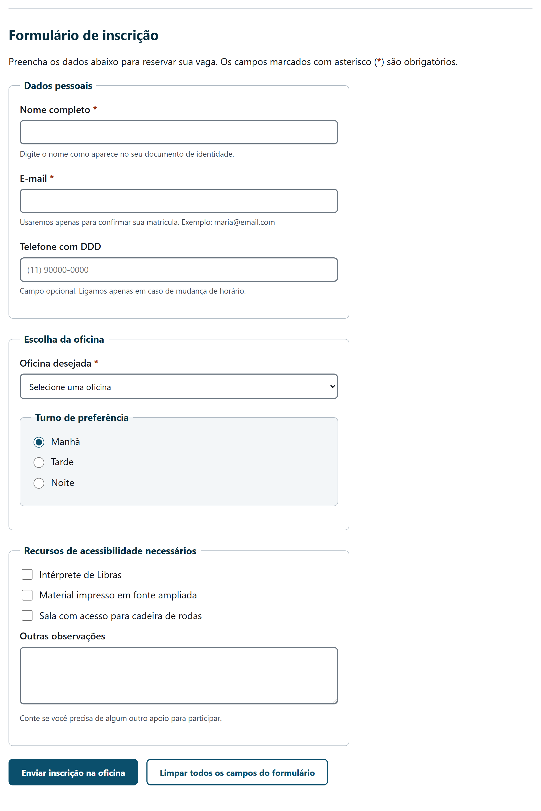
Figura 6 — Formulário completo, com os <fieldset>, rótulos, dicas e botões.
8. Navegação por teclado (foco visível)
As capturas abaixo foram feitas navegando apenas com a tecla Tab. Elas mostram o anel de
foco que indica, a cada momento, qual elemento está selecionado.
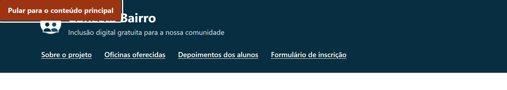
Figura 7 — Primeiro Tab: o link de salto aparece, com anel de foco branco.
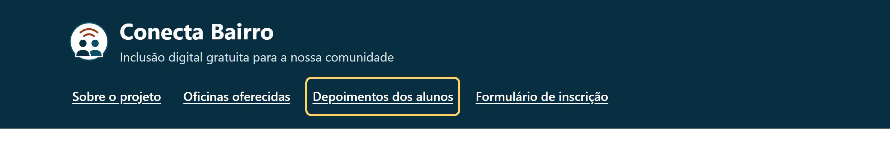
Figura 8 — Foco no menu: sobre o fundo escuro o anel é amarelo, para manter o contraste.
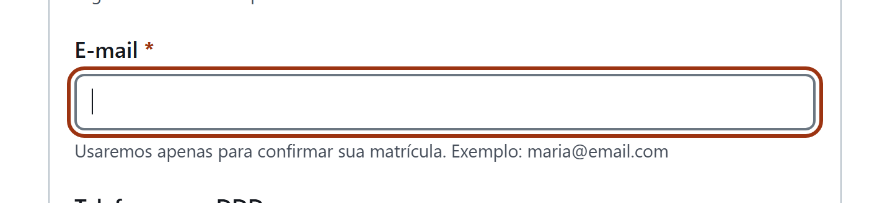
Figura 9 — Campo de e-mail em foco, com o rótulo acima e a dica associada abaixo.
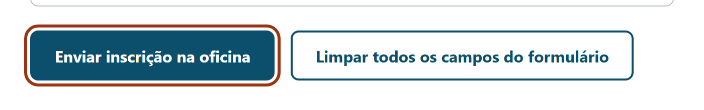
Figura 10 — Botões do formulário, com texto que descreve a ação por completo.
9. A página no celular
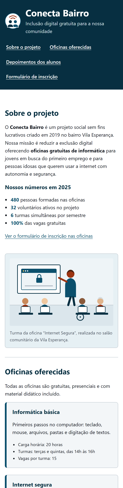
Figura 11 — Tela de 430 px de largura: tudo em uma coluna, sem rolagem horizontal.
Parte 4Explicação das práticas de acessibilidade implementadasCada prática adotada na página: o que foi feito, por que foi feito, quem se beneficia e qual critério da WCAG 2.2 ela atende. Ao final, os testes que comprovam o resultado.
10. Quadro-resumo das práticas
#
Prática
Onde foi aplicada
Critério WCAG 2.2
1
Idioma e título da página
lang="pt-BR" e <title> específico
3.1.1 e 2.4.2
2
HTML semântico e regiões
header, nav, main, section, footer
1.3.1 – Informações e relações
3
Hierarquia de títulos
Um h1, sem saltos de nível
1.3.1 e 2.4.6
4
Texto alternativo em imagens
Logotipo e ilustração, com figure/figcaption
1.1.1 – Conteúdo não textual
5
Listas para informações agrupadas
Menu, números, detalhes das oficinas, rodapé
1.3.1
6
Link de salto
Primeiro elemento do body
2.4.1 – Ignorar blocos
7
Foco sempre visível
:focus e :focus-visible em toda a página
2.4.7 – Foco visível
8
Navegação completa por teclado
Ordem do HTML igual à ordem visual; elementos nativos
2.1.1 e 2.4.3
9
Links e botões descritivos
Todos os links e os dois botões
2.4.4 – Finalidade do link
10
Rótulos associados aos campos
label for + aria-describedby
1.3.1 e 3.3.2
11
Agrupamento de campos
4 fieldset com legend
1.3.1 e 3.3.2
12
Finalidade dos campos
type adequado e autocomplete
1.3.5
13
Informação que não depende só da cor
Links sublinhados; asterisco explicado em texto
1.4.1 – Uso de cor
14
Contraste de cores
Todos os pares de texto, bordas e foco
1.4.3 e 1.4.11
15
Tamanho dos alvos de clique
Botões com 48 px; links do menu com área ampliada
2.5.8 – Tamanho do alvo
16
Legibilidade, zoom e responsividade
Fonte de 18 px, SVG, Grid e media queries
1.4.4 e 1.4.10
17
Respeito às preferências do sistema
prefers-reduced-motion e forced-colors
2.3.3 (AAA) e boa prática
11. Explicação de cada prática
11.1 Idioma e título da página
O que foi feito
<html lang="pt-BR"> e o título “Conecta Bairro | Projeto de Inclusão Digital”.
Por quê
O leitor de tela usa o lang para escolher a voz e a pronúncia. Sem ele — ou com
lang="en" — o texto seria lido com sotaque e entonação errados, muitas vezes de forma
incompreensível. O título é o primeiro texto anunciado e é como a pessoa se orienta entre várias
abas abertas; por isso ele é específico, e não genérico como “Página inicial”.
Quem se beneficia
Pessoas que usam leitor de tela; qualquer pessoa com muitas abas abertas.
11.2 HTML semântico e regiões da página
O que foi feito
Estrutura com header, nav aria-label, main, quatro
section com aria-labelledby, article, aside,
blockquote e footer.
Por quê
Cada tag informa o papel do bloco. O leitor de tela lista as regiões e permite pular
direto para uma delas — “navegação Menu principal, lista com 4 itens”, “região Sobre o projeto”.
Uma <section> sem nome acessível é ignorada como região; por isso o
aria-labelledby aponta para o id do próprio <h2>,
reaproveitando o título visível. O <article> marca cada oficina como conteúdo
independente; o <blockquote> indica que a fala é de outra pessoa; o
<aside> sinaliza que a chamada de voluntariado pode ser pulada sem perda.
Quem se beneficia
Pessoas que usam leitor de tela, que perdem as pistas visuais de layout (bordas, cores, colunas).
11.3 Hierarquia de títulos
O que foi feito
Um único h1, um h2 por seção e h3 para subtítulos, sem pular níveis.
Por quê
A navegação por títulos é um dos recursos mais usados em leitores de tela: a pessoa ouve a lista
de títulos como um índice e escolhe para onde ir. Os níveis foram escolhidos pela hierarquia do
conteúdo e nunca pelo tamanho da fonte — o tamanho é ajustado no CSS.
Quem se beneficia
Pessoas que usam leitor de tela; pessoas com deficiência cognitiva, que se apoiam na estrutura clara.
11.4 Texto alternativo em imagens
O que foi feito
As duas imagens informativas têm alt descritivo; a ilustração fica em
<figure> com <figcaption>.
Por quê
O alt e a legenda têm papéis diferentes. A legenda contextualiza
(onde foi a aula); o altdescreve o que se vê, para quem não vê. Por isso ele
não repete a legenda nem começa com “imagem de” — o leitor de tela já anuncia que é uma imagem.
Imagens puramente decorativas receberiam alt="", para serem ignoradas.
Quem se beneficia
Pessoas cegas; também quem está com conexão lenta e a imagem não carregou.
11.5 Listas para informações agrupadas
O que foi feito
8 listas <ul>: menu, números do projeto, detalhes de cada oficina e blocos do rodapé.
Por quê
O leitor de tela anuncia “lista com 3 itens” antes de ler o conteúdo, dando noção de quantidade e
deixando claro que carga horária, horário e vagas pertencem ao mesmo conjunto. Parágrafos separados
por <br> não transmitiriam essa relação.
Quem se beneficia
Pessoas que usam leitor de tela.
11.6 Link de salto
O que foi feito
Link “Pular para o conteúdo principal” como primeiro elemento focável, visível apenas ao receber foco.
Por quê
Quem usa mouse pula o menu com um olhar. Quem navega por teclado teria de passar por
todos os links do cabeçalho antes de chegar ao conteúdo. O link é escondido com
position: absolute fora da tela, e não com display: none,
que o removeria da ordem de tabulação e o tornaria inalcançável (Figura 7).
Quem se beneficia
Pessoas que navegam só por teclado, com leitor de tela ou com dispositivos de acionamento (switch).
11.7 Foco sempre visível
O que foi feito
Anel de 3 px com afastamento em todo elemento focável; amarelo sobre fundos escuros e branco no link de salto.
Por quê
O erro mais comum em sites reais é outline: none: o anel some e navegar por teclado vira
um chute às cegas. Aqui foi feito o oposto, com cor de 7,2:1 de contraste. Como o laranja sumiria
sobre o cabeçalho azul-escuro, esses trechos usam o amarelo claro, com 9,8:1 (Figuras 7 a 9).
Quem se beneficia
Todas as pessoas que usam teclado, incluindo quem tem limitação motora e não usa mouse.
11.8 Navegação completa por teclado
O que foi feito
Apenas elementos nativos interativos (a, input, select,
textarea, button) e ordem do HTML igual à ordem visual — o Grid monta
as colunas sem reordenar o código.
Por quê
O teclado e o leitor de tela seguem a ordem do código, não a da tela. Elementos nativos já
recebem foco e respondem a Enter, Espaço e às setas sem nenhuma linha de
JavaScript. Uma <div class="botao"> teria a mesma aparência, mas seria
inalcançável por teclado.
Quem se beneficia
Pessoas que não usam mouse, por deficiência motora, visual ou por preferência.
11.9 Links e botões com texto descritivo
Evitado
Usado na página
“Clique aqui”
“Ver o formulário de inscrição nas oficinas”
“Saiba mais”
“Enviar e-mail para a equipe de voluntariado do Conecta Bairro”
“Enviar”
“Enviar inscrição na oficina”
“Limpar”
“Limpar todos os campos do formulário”
Leitores de tela permitem listar somente os links da página, fora do contexto em que
aparecem. Uma lista com quatro “clique aqui” é inútil; a lista da coluna direita continua
compreensível isolada. O link externo do rodapé ainda avisa “(em inglês)” e usa
hreflang="en", porque o destino está em outro idioma.
11.10 Rótulos associados aos campos
O que foi feito
Os 11 campos têm <label for> idêntico ao id; as dicas são ligadas
por aria-describedby.
Por quê
É a igualdade entre for e id — e não a proximidade visual — que cria a
associação. Com ela, o leitor de tela anuncia “E-mail, obrigatório, caixa de edição” e lê a dica em
seguida, em vez de anunciar só “caixa de edição”, sem dizer o que digitar. Ganho extra: clicar no
rótulo move o foco para o campo, ampliando a área de acerto.
Quem se beneficia
Pessoas que usam leitor de tela; pessoas com tremor ou dificuldade motora fina.
11.11 Agrupamento de campos com fieldset e legend
O que foi feito
Quatro grupos: dados pessoais, escolha da oficina, turno (aninhado) e recursos de acessibilidade.
Por quê
Em grupos de radio e checkbox, cada rótulo isolado diz apenas “Manhã”, “Tarde”,
“Noite” — falta a pergunta. A <legend> é repetida junto de cada opção:
“Turno de preferência: Manhã, botão de opção marcado, 1 de 3”.
Quem se beneficia
Pessoas que usam leitor de tela; pessoas com deficiência cognitiva, pela organização visual em blocos.
11.12 Finalidade dos campos
O que foi feito
type="email", type="tel" e autocomplete="name | email | tel".
Por quê
O tipo correto faz o celular abrir o teclado apropriado (com @ ou numérico), e o
autocomplete permite que o navegador preencha os dados sozinho, reduzindo a digitação.
Quem se beneficia
Pessoas com dificuldade motora ou cognitiva; pessoas idosas; qualquer pessoa usando o celular.
11.13 Informação que não depende só da cor
O que foi feito
Links sempre sublinhados. A obrigatoriedade dos campos é comunicada por três caminhos: o atributo
required, o asterisco e a frase que explica o asterisco.
Por quê
Remover o sublinhado dos links é comum em sites “modernos”, mas quem não distingue cores deixa de
saber onde estão os links. Da mesma forma, uma pessoa daltônica pode não perceber o laranja do
asterisco, mas continua recebendo a informação pelos outros dois caminhos.
Quem se beneficia
Pessoas daltônicas ou com baixa visão; quem usa o celular sob sol forte.
11.14 Contraste de cores
O que foi feito
Paleta reduzida a poucas cores em variáveis CSS, cada uma medida contra o fundo em que aparece.
Por quê
A WCAG exige 4,5:1 para texto e 3:1 para bordas e componentes. Centralizar as cores em variáveis
evita que tons não verificados apareçam no meio do arquivo. A tabela completa das medições está no
item 12.2.
Quem se beneficia
Pessoas com baixa visão, pessoas idosas e qualquer pessoa em tela de baixa qualidade ou com reflexo.
11.15 Tamanho dos alvos de clique
O que foi feito
Botões com min-height: 48px, links do menu com padding, radios e checkboxes ampliados e rótulos clicáveis.
Por quê
Alvos pequenos exigem precisão; com tremor ou na tela sensível ao toque, o erro de clique é frequente.
Quem se beneficia
Pessoas com tremor ou deficiência motora; pessoas idosas; uso no celular.
11.16 Legibilidade, zoom e responsividade
O que foi feito
Fonte sem serifa de 18 px com entrelinha 1,6; imagens em SVG; rótulos acima dos campos;
layout em uma coluna abaixo de 860 px.
Por quê
Com zoom de 200% a janela “encolhe” para o CSS, e o layout de uma coluna evita conteúdo cortado e
rolagem horizontal. O SVG não perde nitidez no zoom. A Figura 11 mostra o resultado no celular.
Quem se beneficia
Pessoas com baixa visão que usam zoom; pessoas com dislexia; uso em celular.
11.17 Respeito às preferências do sistema
O que foi feito
@media (prefers-reduced-motion: reduce) e @media (forced-colors: active).
Por quê
São configurações que a pessoa já fez no próprio sistema operacional. Quem pediu menos animação
não recebe transições; no modo de alto contraste do Windows, a palavra-chave Highlight
mantém o anel de foco visível com a cor escolhida pelo usuário.
Quem se beneficia
Pessoas com distúrbios vestibulares ou sensibilidade a movimento; pessoas com baixa visão que usam alto contraste.
12. Testes de acessibilidade realizados
12.1 Teste 1 — Navegação apenas pelo teclado
A página foi percorrida do início ao fim usando somente Tab, Shift+Tab,
Enter, Espaço e as setas. O teste foi automatizado com o Chrome DevTools
Protocol, que dispara eventos reais de teclado e registra qual elemento ficou em foco a cada passo.
Resultado: 23 paradas, na mesma ordem do conteúdo visual, sem nenhuma armadilha de
foco.
Tab
Elemento que recebeu o foco
1
Link “Pular para o conteúdo principal”
2 a 5
Os quatro links do menu principal
6
Link “Ver o formulário de inscrição nas oficinas”
7
Link “Enviar e-mail para a equipe de voluntariado”
8 a 10
Campos Nome completo, E-mail e Telefone
11
Lista “Oficina desejada”
12
Grupo de turno (as setas alternam entre as três opções)
13 a 15
As três caixas de seleção de recursos de acessibilidade
16
Área de texto “Outras observações”
17 e 18
Botões de enviar e de limpar
19 a 23
Links do rodapé (telefone, e-mail e links úteis)
Note o comportamento correto do grupo de radio: ele ocupa uma única parada
de Tab, e a troca entre Manhã, Tarde e Noite é feita com as setas. Esse é o padrão
nativo do HTML.
12.2 Teste 2 — Contraste de cores
Todos os pares de cor usados na página foram medidos pela fórmula de contraste da WCAG. A exigência
é de 4,5:1 para texto normal e 3:1 para bordas e componentes de
interface.
Elemento
Frente
Fundo
Medido
Mínimo
Resultado
Texto do corpo
#14181f
#ffffff
17,79:1
4,5:1
Passa
Textos de apoio e dicas
#454d59
#ffffff
8,54:1
4,5:1
Passa
Links e títulos
#0b4f6c
#ffffff
8,94:1
4,5:1
Passa
Asterisco e anel de foco
#9c3412
#ffffff
7,21:1
3:1
Passa
Texto do cabeçalho e rodapé
#ffffff
#072f41
14,08:1
4,5:1
Passa
Slogan do cabeçalho
#d7e4ea
#072f41
10,84:1
4,5:1
Passa
Links do rodapé
#b9e2f5
#072f41
10,23:1
4,5:1
Passa
Texto do botão primário
#ffffff
#0b4f6c
8,94:1
4,5:1
Passa
Borda dos campos do formulário
#6b7681
#ffffff
4,63:1
3:1
Passa
Texto sobre os cartões
#14181f
#f3f6f8
16,39:1
4,5:1
Passa
Texto sobre o azul claro
#14181f
#e6f0f4
15,37:1
4,5:1
Passa
Legenda da figura
#454d59
#e6f0f4
7,38:1
4,5:1
Passa
Anel de foco sobre fundo escuro
#ffd166
#072f41
9,76:1
3:1
Passa
Nenhum par ficou abaixo do mínimo — a menor margem é a da borda dos campos (4,63:1 para um mínimo
de 3:1). O primeiro tom de cinza testado para essa borda reprovou e precisou ser escurecido.
12.3 Teste 3 — Inspeção da estrutura do documento
Verificação
Resultado
Situação
Idioma declarado
lang="pt-BR"
OK
Quantidade de <h1>
1 (único)
OK
Hierarquia de títulos sem saltos
h1 → h2 → h3
OK
Regiões principais
1 header, 1 nav, 1 main, 1 footer
OK
Seções e artigos
4 section no main, 3 article, 1 aside
OK
Imagens com alt preenchido
2 de 2
OK
Campos sem rótulo associado
0 de 11
OK
Grupos de campos
4 fieldset, 4 legend
OK
Botões nativos
2 <button>
OK
Listas de informação
8 listas, 25 itens
OK
12.4 Teste 4 — Zoom e telas pequenas
A página foi aberta com 200% de zoom e em uma janela de 430 px de largura. Com o
@media (max-width: 860px), as colunas viram uma só, nenhum conteúdo é cortado e não
aparece rolagem horizontal.
12.5 Limitações do que foi testado
Por honestidade técnica, vale registrar o que não foi feito: a página não foi
submetida ao validador do W3C nem a extensões como axe DevTools ou WAVE, e não foi ouvida em um
leitor de tela real (NVDA ou VoiceOver). Os testes descritos acima são estruturais, de contraste e
de teclado. Uma verificação com leitor de tela e com pessoas usuárias reais é o passo natural
seguinte — ferramentas automáticas detectam só uma parte dos problemas de acessibilidade; o resto
só aparece no uso.
Parte 5ConclusãoAs dificuldades encontradas, o que foi aprendido com a atividade e onde o projeto está publicado.
13. Dificuldades encontradas
Escolher entre <section> e <article>
Foi a dúvida mais recorrente, porque as duas tags não produzem nenhuma diferença visual. A regra
que resolveu: se o bloco continuaria fazendo sentido publicado sozinho, é <article>;
se ele só existe como parte da página, é <section>. Por isso cada oficina virou
um <article>, e os agrupamentos temáticos ficaram como <section>.
Descobrir que <section> sozinha não vira região
A expectativa era que bastasse usar a tag. Na prática, uma <section> sem nome
acessível não é anunciada como região pelo leitor de tela. Foi preciso adicionar
aria-labelledby apontando para o id do título de cada seção — um detalhe
que quase não aparece nos tutoriais introdutórios.
Escrever um bom texto alternativo
Mais difícil do que parecia. As primeiras versões do alt ou repetiam a legenda, ou
eram vagas demais (“imagem da oficina”). O critério que ajudou: descrever o que uma pessoa
precisaria saber daquela imagem se não pudesse vê-la.
Ajustar as cores até passarem no contraste
A paleta escolhida inicialmente era mais clara e mais “suave”. Vários pares reprovaram na medição —
a borda dos campos e o cinza dos textos de apoio, principalmente. Foi necessário escurecer os tons
e medir de novo. O aprendizado: contraste não se avalia no olho, se calcula.
O anel de foco que sumia
Definido um único anel laranja para toda a página, ele desaparecia sobre o cabeçalho azul-escuro e
sobre o próprio link de salto, que também é laranja. A solução foi manter o anel padrão e
sobrescrever a cor nos contextos escuros (amarelo) e no link de salto (branco).
14. Aprendizados e considerações finais
A tag certa já traz acessibilidade pronta.<button>,
<label> e <fieldset> entregam foco, atalhos de teclado e
anúncios corretos sem nenhuma linha de JavaScript.
Acessibilidade é decisão de projeto, não etapa final. Escolher a paleta já
medindo contraste custa alguns minutos; refazer as cores de um site pronto custa muito mais.
O HTML descreve o conteúdo; o CSS descreve a aparência. Sempre que a vontade era
trocar uma tag para obter um efeito visual, o caminho correto era manter a tag e resolver no CSS.
ARIA complementa, não substitui. Os poucos atributos ARIA usados
(aria-label, aria-labelledby, aria-describedby) apenas
preenchem lacunas do HTML nativo.
O teste do teclado é o mais rápido e o mais revelador. Percorrer a página inteira
com Tab leva menos de um minuto e expõe de imediato foco invisível, ordem ilógica e
elementos inalcançáveis.
Todo mundo ganha. Texto maior, bom contraste, alvos de clique generosos e rótulos
claros melhoram a experiência de qualquer pessoa — inclusive de quem usa o celular no sol ou está
com pressa.
O resultado é uma página que atende a todos os requisitos estruturais da atividade e que pode ser
usada por completo — da leitura das oficinas ao envio da inscrição — só com o teclado, com zoom
alto ou em uma tela de celular. Mais do que cumprir uma lista de critérios, a atividade mostrou que
um site acessível não exige tecnologia avançada: exige usar o HTML pelo que ele significa e conferir
cada decisão do ponto de vista de quem vai usar a página.
15. Repositório no GitHub
O projeto completo — index.html, css/estilo.css, as imagens em
img/ e este documento em docs/ — está publicado no repositório público:
Para abrir a página basta baixar o repositório e abrir o arquivo index.html em
qualquer navegador: o projeto usa apenas HTML e CSS, sem dependências, servidor ou etapa de
compilação.